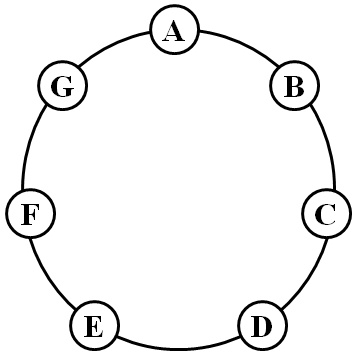
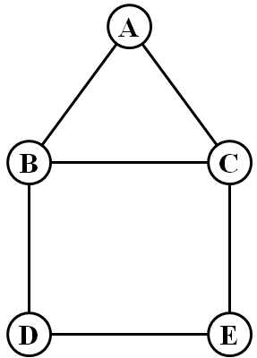

| Source file: | hunt.{c, cpp, java} |
| Input file: | hunt.in |
In Irish mythology, a Leprechaun is a small sprite who stores all his treasure in a hidden pot of gold at the end of the rainbow. If someone is able to catch the Leprechaun, he must give that person his pot of gold. In this problem, we explore the difficulty of capturing a Leprechaun.
We model a search with V villagers trying to catch a single
Leprechaun as a game on a simple undirected graph having
As examples, consider the two figures below. For the graph in Figure 1, a single villager can never capture a Leprechaun, as the Leprechaun can easily stay away from the villager. However, two villagers can capture the Leprechaun after at most 2 turns. For example, the villagers might begin at nodes A and D, in which case a clever Leprechaun will start at node F. But after the villager at A moves to G the villagers can capture the Leprechaun on their second turn, no matter whether the Leprechaun moves to E or remains at F.
For the graph in Figure 2, a single villager is unable to catch a clever Leprechaun. To see why this is the case, we describe a possible strategy of the Leprechaun, which is to always stay within the square made by BCDE, and opposite of the villager if the villager is in that square. If the villager were ever to go to A, the Leprechaun can remain still. In contrast, two villagers are able to capture the Leprechaun on their first move by picking initial positions such as B and E.
|
 |
 |
| Figure 1 | Figure 2 |
Input:
Each tests begins with a line containing three
integers:
Output: For each test case, output a line, prefaced with the case number as shown in the example output below, followed by the minimum number of moves that the villagers need to guarantee capture of the Leprechaun, or the word NEVER if the villagers are unable to capture the Leprechaun.
| Example Input: | Example Output: |
|
1 7 7 AB BC CD DE EF FG GA 2 7 7 AB BC CD DE EF FG GA 1 5 6 AB AC BC BD DE EC 2 5 6 AB AC BC BD DE EC 2 10 15 AB BC CD DE EA AF BG CH DI EJ FH HJ JG GI IF 3 10 15 AB BC CD DE EA AF BG CH DI EJ FH HJ JG GI IF 3 14 10 AB BC CD EF FG GH IJ JK LM MN 4 14 10 AB BC CD EF FG GH IJ JK LM MN 0 |
CASE 1: NEVER CASE 2: 2 CASE 3: NEVER CASE 4: 1 CASE 5: NEVER CASE 6: 1 CASE 7: NEVER CASE 8: 2 |